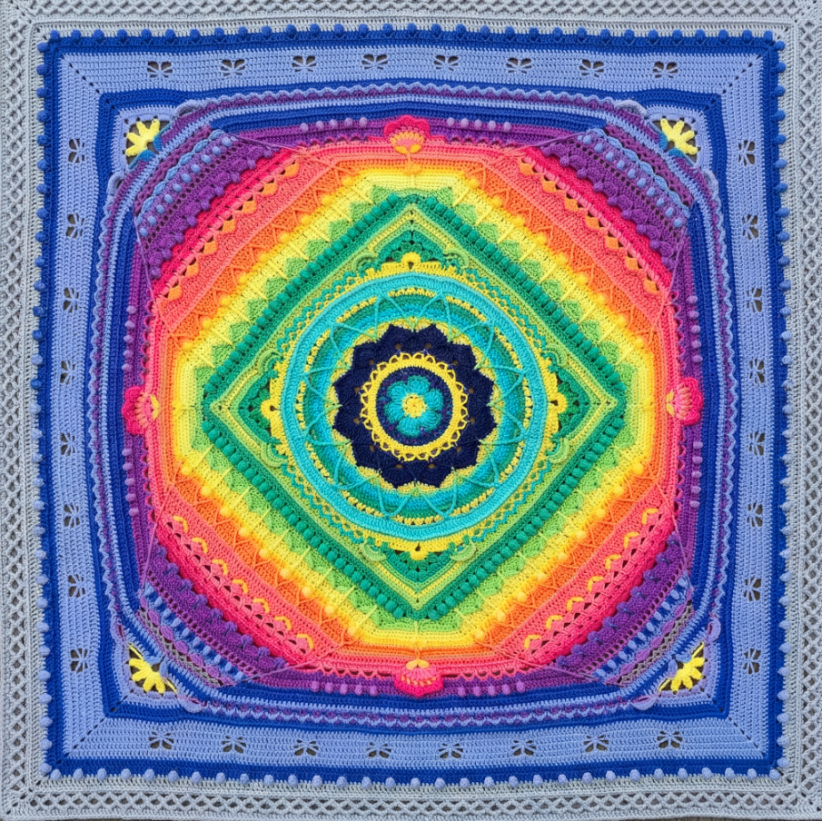
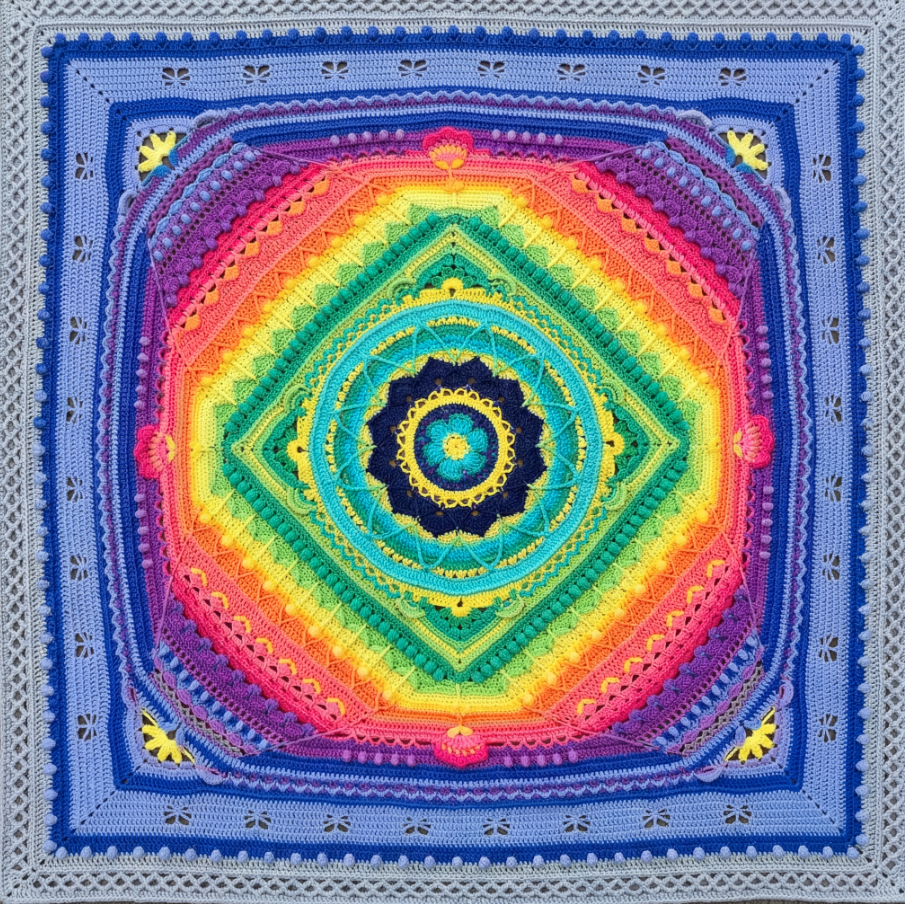
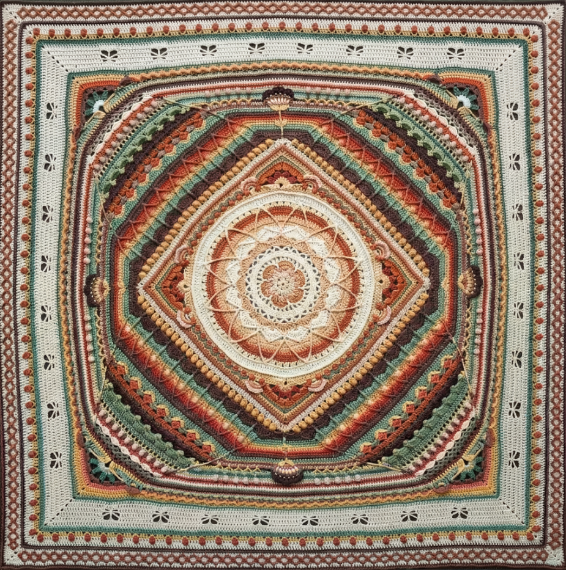
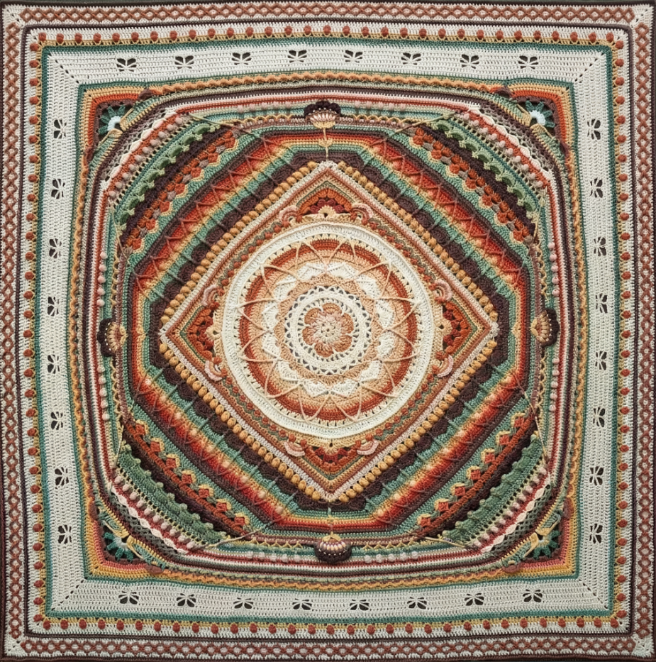

About the Harmony Circle Mandala
The Harmony Mandala Blanket is a richly textured, evolving crochet design inspired by the beauty of mandalas and layered stitches. Each round introduces new details such as petals, lacework, shells, and raised textures that gradually expand outward like a blooming flower. What begins as a simple circular motif eventually transforms into a detailed, artistic blanket full of color, depth, and dimension.
This blanket stands out for its vibrant color transitions, three–dimensional stitchwork, and elegant mandala style. Every section builds on the last, allowing crocheters to experience a sense of progression and creativity through each stage. The pattern invites bold expression, making it easy to personalize with soft pastels, bright jewel tones, earthy neutrals, or any color palette you love.
The Harmony Mandala Blanket is recommended for intermediate crocheters, although adventurous beginners can follow along with patience and careful attention. It is designed as a creative journey rather than a quick project, typically taking between 60 and 100 hours to complete depending on yarn weight and skill level. The finished piece is substantial, often large enough for a bedspread or a decorative throw, and many crocheters proudly display it as a statement art piece in their home.
More than just a blanket, the Harmony Mandala project encourages mindfulness, creativity, and ongoing learning. Each stitch becomes part of a meditative process, resulting in a cozy, meaningful heirloom that reflects both time and artistic expression.
 

 

Carmela Turman is a yarn-slinging, stitch-taming crochet wizard who treats color like confetti and patterns like secret codes. Mixing modern tricks with grandma-approved techniques, she creates projects that make you say, “I didn’t know I could do *that*!”—all while keeping your creativity, mindfulness, and occasional yarn-induced happy dance on point. Warning: may cause rainbow explosions and uncontrollable “just one more round” syndrome!

- Yarn and materials: Various suppliers
- Photo references: Original project images. Completed blankets with various colors schemes by Carmela Turman
- Technical support: HTML, CSS & JavaScript resources from online tutorials